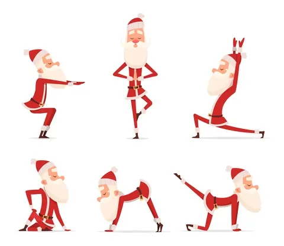
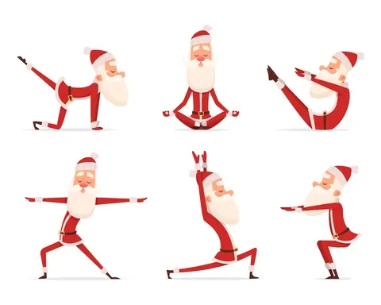
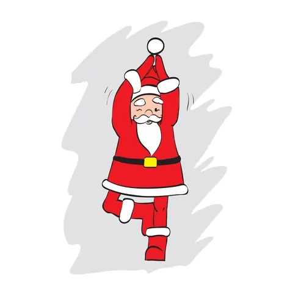
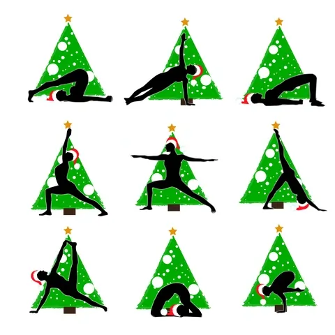

Coming up soon!
Here will we present upcoming updates. The first update we will make is to adapt our images and exercises to the approaching Christmas. We also plan to have more choices of exercises and also adapt to seasons and holidays. if it is something you wish, you are welcome to contact us.
Breathing exercise



